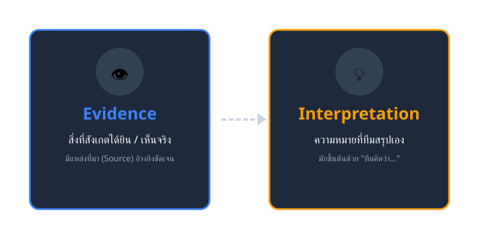
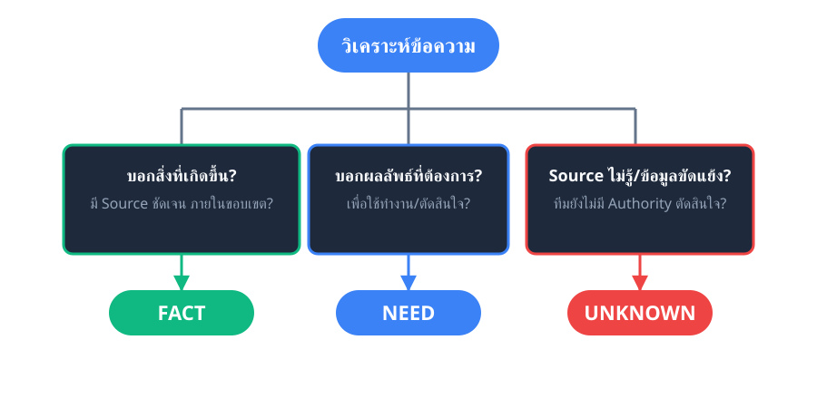
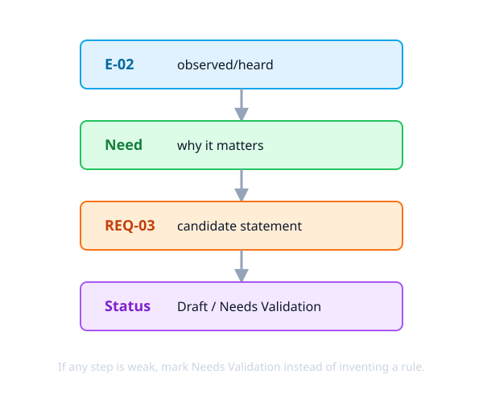
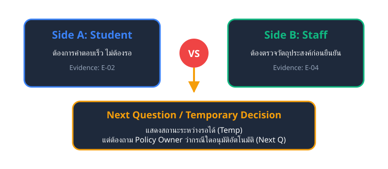

จากบทสนทนาสู่หลักฐาน ความต้องการ และ Requirement Candidate
ฉบับ Beginner-Friendly สำหรับนักศึกษาวิศวกรรมซอฟต์แวร์
Core Concepts: Evidence Need Requirement Candidate
| Week | คำถามที่ต้องตอบให้ได้ | สิ่งที่ส่งต่อไปสัปดาห์ถัดไป |
|---|---|---|
| W1 | ปัญหาคืออะไร? อะไรคือข้อสมมติฐาน? | Problem Brief |
| W2 | ใครเกี่ยวข้อง? ขอบเขตอยู่ตรงไหน? | Stakeholder & Scope |
| W3 | ต้องถามอะไรเพื่อเรียนรู้สิ่งที่ไม่รู้? | Interview Guide + Rehearsal |
| W4 (Today) | เรารู้อะไร และยังไม่รู้อะไรจากบทสนทนา? | Evidence Log + Req. Candidates |
| W5 | Requirement ใดควรทำก่อน? | Prioritized Backlog |
| W6 | สื่อสารและตรวจความถูกต้องอย่างไร? | User Story & Acceptance Criteria |
หลักฐานที่ดีคือจุดเริ่มต้นของการออกแบบซอฟต์แวร์
ในวิชานี้ Evidence คือร่องรอยของสิ่งที่ผู้ให้ข้อมูลกล่าว ทำ หรือตรวจพบ โดยต้อง ระบุแหล่งที่มาให้ย้อนกลับได้เสมอ
Evidence ยังไม่เท่ากับ Requirement!
มันช่วยให้ทีมตอบได้อย่างซื่อสัตย์ว่า "ข้อสรุปนี้มาจากอะไร"
"Student กลับไปถามในแชตหลังส่งคำขอ เพราะไม่เห็นความคืบหน้า"
- Source: Student Simulation, excerpt 02
การตีความไม่ใช่สิ่งผิด แต่ ต้องแยกช่อง เพื่อให้คนอื่นเห็นว่าข้อสรุปเกิดจาก Evidence ใด

ในการบันทึก Lab ให้ใช้โครงสร้าง 6 ช่อง เพื่อความครบถ้วนและตรวจสอบย้อนหลังได้:
| Field | คำถามที่ช่วยกรอก | ตัวอย่าง (Campus Booking) |
|---|---|---|
| 1. Evidence ID | อ้างอิงรายการนี้ด้วยรหัสใด? | E-02 |
| 2. Source | ข้อมูลมาจากใคร/ช่วงใด? | Student Simulation, excerpt 02 |
| 3. Observed/Heard | ได้ยิน/เห็นอะไร (ไม่เติมข้อสรุป)? | กลับไปถามในแชตหลังส่งคำขอ |
| 4. Tag | เป็น Fact, Need หรือ Unknown? | Need |
| 5. Interpretation | ทีมคิดว่าสิ่งนี้หมายถึงอะไร? | ต้องการเห็นความคืบหน้าโดยไม่ถามซ้ำ |
| 6. Follow-up | ต้องถาม/ตรวจอะไรต่อ? | สถานะใดช่วยให้ตัดสินใจได้? |
การจำแนกข้อมูลเพื่อกำหนด "การกระทำถัดไป"
Tag ไม่ได้มีไว้เพื่อให้ตารางดูเป็นทางการ แต่มีไว้เพื่อ กำหนดการกระทำ (Action) ถัดไปของทีม
สิ่งที่ระบุหรือสังเกตได้ภายในขอบเขตของ Source นั้น
Action: เก็บ Source และตรวจว่าจริงกับทุกคนหรือไม่
ผลลัพธ์หรือความช่วยเหลือที่ Stakeholder ต้องการเพื่อทำงาน
Action: ถามเหตุผล และสร้าง Candidate
สิ่งที่ยังไม่รู้ ข้อมูลขัดแย้ง หรือยังไม่มี Authority ยืนยัน
Action: สร้าง Follow-up Question หรือหา Source เพิ่ม

Stakeholder มักจะพูดถึงความต้องการออกมาเป็น Feature (Solution) เพราะเป็นสิ่งที่พวกเขานึกภาพออกง่ายที่สุด
หน้าที่ของนักวิศวกรรมซอฟต์แวร์ ไม่ใช่การปฏิเสธ Feature แต่ต้องใช้การตั้งคำถาม (Probe) เพื่อหา "ผลลัพธ์ที่เขาต้องการจริงๆ (Need)"
"อยากได้ระบบส่ง Notification เข้ามือถือ"
"ต้องรู้การเปลี่ยนสถานะให้ทันเวลา เพื่อวางแผนงานต่อไปได้"
การร่างข้อกำหนดที่อ้างอิงจากหลักฐาน
คือ ข้อกำหนดฉบับร่าง ที่เกิดจาก Evidence/Need และยังต้องผ่านการตรวจคุณภาพ ยืนยัน และจัดลำดับ Priority ในสัปดาห์ถัดๆ ไป
คำว่า "Candidate" ป้องกันไม่ให้ทีมเข้าใจผิดว่าข้อมูลทุกอย่างในขั้นตอนนี้ได้รับการอนุมัติแล้ว
(การใช้สถานะ Needs Validation ในสัปดาห์นี้ถือเป็นผลลัพธ์ที่ถูกต้อง!)
| ส่วนประกอบ | คำถามตรวจทาน | ตัวอย่าง |
|---|---|---|
| Actor/System | ใครหรือระบบใดต้องทำ? | ระบบควร |
| Behavior | ต้องทำอะไร / มีคุณสมบัติใด? | แสดงสถานะคำขอและขั้นตอนที่ดำเนินการอยู่ |
| Purpose | ช่วยตอบ Need ใด? | เพื่อลดการถามซ้ำและช่วยผู้ขอวางแผน |

การเชื่อมโยง (Trace) ไม่ได้พิสูจน์ว่า Candidate ถูกต้อง 100% แต่ทำให้ การตรวจ แก้ไข และเจรจามีเหตุผลรองรับ
E-03: Staff ตรวจตารางก่อนตอบ
Need: ต้องตรวจ Availability จากข้อมูลที่ตรงกัน
REQ-01: ระบบแสดงเวลาว่างเพื่อป้องกันช่วงเวลาชนกัน
Needs Validation หรือไม่?การจัดการความขัดแย้งอย่างเป็นระบบ
ความขัดแย้งเกิดเมื่อ Stakeholder มีเป้าหมายหรือข้อจำกัดไม่ตรงกัน
หน้าที่ของเราคือ ทำให้ความต่างมองเห็นได้ ไม่ใช่ตัดสินใจเอาเอง

การใช้ AI จำลอง Stakeholder มีประโยชน์ในการฝึกถามและบันทึก แต่ AI ไม่มีอำนาจสร้างนโยบายมหาวิทยาลัย
หากข้อมูลมาจาก AI ให้กำหนด Candidate Status เป็น Needs Validation เสมอ
1. Evidence Log: 5 รายการ
(Observed ต้องแยกจาก Interpretation และมี Source AI Tag)
2. Req. Candidates: 3-5 ข้อ
(มี E-ID เชื่อมโยง หรือติดป้าย Needs Validation)
3. Conflict / Unknown: 1 เรื่อง
(แสดง 2 ด้าน พร้อมระบุ Next Question)
4. Peer Review & Commit:
`submit(w04): evidence and requirement candidates`
Exit Ticket: ระบุ Candidate 1 ข้อ พร้อม Evidence ที่รองรับ